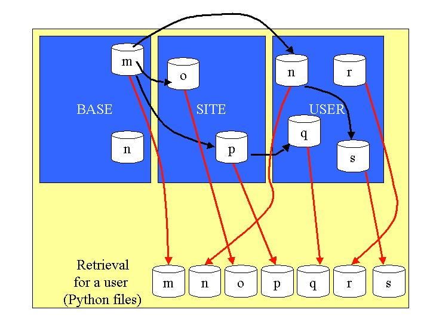
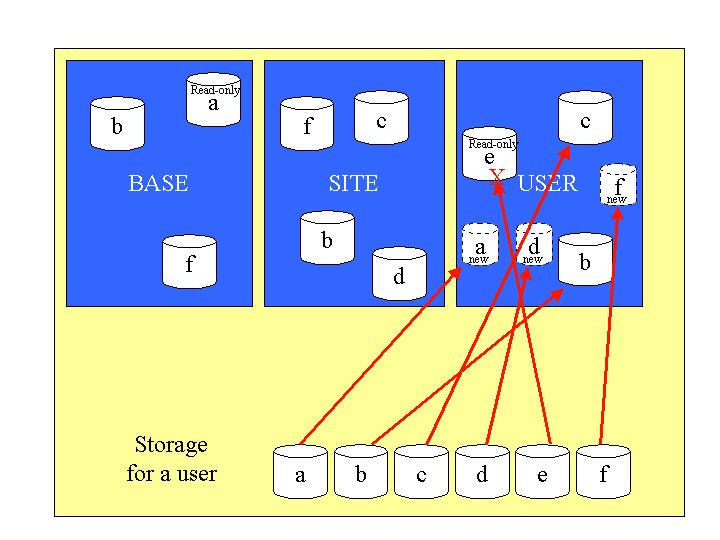
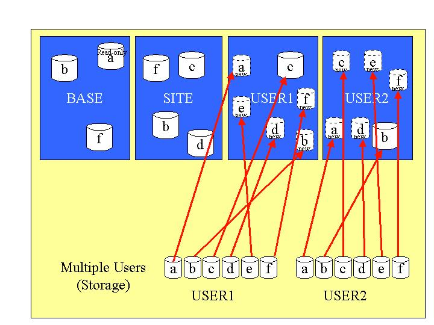
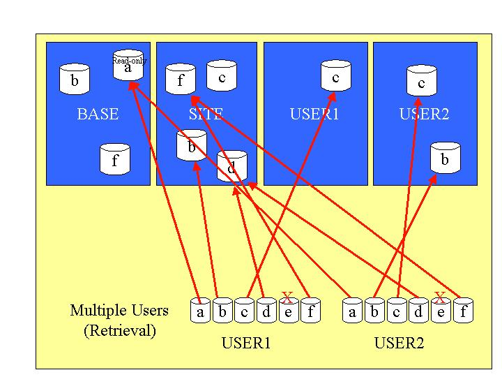

Overview
The GFESuite software uses the concept of site and user overrides. This permits the installed files from the software distribution to not interfere with local modifications. Installed files are called BASE files. A site can choose to make changes or override the BASE files by installing the sites's files in the SITE area. An individual user can override the BASE and SITE definitions by installing custom user files in the USER area. Files under the BASE directories should NEVER be modified by the site or they will be overwritten on the next upgrade.Upon request of data from EDEX, the server will first look for data in the customized user directory. If the requested data is found, it is returned. If not found, the server then looks in the site directory. If the requested data is found there, it is returned. If not found, then the server looks in the base directory. If the requested data is found in the base directory, it is returned. If not found, an error is returned.
Upon storage of data to EDEX, the server will always try to write into the customized user directory. If it is successful, subsequent reads of the data will always be returned via the customized version of the file.
Data is retrieved from EDEX using different identifiers, which identify the name of an entity, but not its location (e.g., BASE, SITE, USER). When that data is retrieved, the client can then determine where the data was retrieved.
There are some special cases:
- Server configuration files are not stored in the server, but still use the concept of BASE and SITE. There are no USER-type files for the server configuration since there is only one server per site. See the server configuration information for details.
- Grids, topography, and map backgrounds data available through EDEX are available at only one level. There is no override capability for this type of data through the server. In other words, every user of an EDEX will "see" the identical set of grids, topography, and map backgrounds. There aren't separate databases for BASE Forecast and SITE or USER Forecast.
Data Retrieval Using the BASE, SITE, USER Concept
The following illustration shows examples of the files that will be retrieved by a user. The search path for users will always be the USER directory first, then the SITE followed by the BASE. If the file is not found, an error will be returned. Files in the SITE override files in the BASE directory. Files in each USER directory override files in the BASE and SITE.Non-Python Case
This example applies to non-Python
files stored in the server.
This table illustrates the different conditions and what file is
retrieved based on a USER, and based on SITE.
| File | Exists in BASE | Exists in SITE | Exists in USER | Returned File by USER | Returned File by SITE |
| a | YES | NO | NO | Base | Base |
| b | YES | YES | YES | User | Site |
| c | NO | YES | YES | User | Site |
| d | NO | YES | NO | Site | Site |
| e | NO | NO | YES | User | <none> |
| f | YES | YES | NO | Site | Site |

Python Case
Data retrieval for Python files from the server work on essentially
the same principal, except that Python files can import other files as
shown in the following table and illustration illustration (the black
arrows
indicate the import path as defined in the actual files, the red arrows
indicate the final result):
| File | Exists in BASE | Exists in SITE | Exists in USER | Returned File by USER (considering imports) | Returned File by SITE (considering imports) |
| m | YES | NO | NO | Base m | Base m |
| n | YES | NO | YES - inports m | Base m + User n | Base n |
| o | NO | YES - imports m | NO | Base m + Site o | Base m + Site o |
| p | NO | YES - imports m | NO | Base m + Site p | Base m + Site p |
| q | NO | NO | YES - imports p | Base m + Site p + User q | <none> |
| r | NO | NO | YES | User r | <none> |
| s | NO | NO | YES - imports n | Base m + User n + User s | <none> |

Note that for the Python "n" case, the BASE "n" is hidden from the
USER since there is already an "n" in USER. Therefore a USER who
uses an "import n" statement in one of the files will not see the BASE
"n", but will see the USER "n". There is no way to specify in an
import statement whether you want BASE or SITE or USER. In the case of
USER "r", no imports were performed at all.
Data Storage Using the BASE, SITE, USER Concept
The following illustration shows examples of the files that will be stored by a user. The storage path for users is always the USER directory. If the file is read-only, attempts to store a file with the same name will fail.This table illustrates the different conditions and what file is
stored
based on a USER, and based on SITE.
File "e" in USER is read-only in this example. Attempts to write
over "e" will fail. File "a" is located in BASE and a new one is
written to USER. Even though "a" in BASE is read-only, the user
may write a file into USER under the same name.
| File | Exists in BASE | Exists in SITE | Exists in USER | Storage Location for USER | Storage Location for SITE |
| a | YES (read-only) | NO | NO | User | Base |
| b | YES | YES | YES | User | Base |
| c | NO | YES | YES | User | Base |
| d | NO | YES | NO | User | Base |
| e | NO | NO | YES (read-only) | <ERROR> | Base |
| f | YES | YES | NO | User | Base |

The Effect of Multiple Users
Multiple users, as long as their login name or specified user name are different, are isolated from each other. This allows individuals to create their own special set of edit areas, smart tools, and GFE configurations without affecting other users.It is quite possible, and probable, to have two different clients, such as GFEs, running under the same user login name. This case is not treated as two different users.
The following illustration shows examples of the files that will be stored by two users with different login names. The storage path for users is always the USER directory. If the file is read-only, then attempts to store a file with the same name will fail.
The table illustrates the different conditions and what file is
stored
based two users, USER1 and USER1. In this example, there are no
read-only
files in USER1 or USER2. Examples are shown for the
non-Python files, which don't use the import facility.
| File | Exists in BASE | Exists in SITE | Exists in USER1 | Exists in USER2 | Storage Location for USER1 | Storage Location for USER2 |
| a | YES (read-only) | NO | NO | NO | User1 | User2 |
| b | YES | YES | NO | YES | User1 | User2 |
| c | NO | YES | YES | NO | User1 | User2 |
| d | NO | YES | NO | NO | User1 | User2 |
| e | NO | NO | NO | NO | User1 | User2 |
| f | YES | YES | NO | NO | User1 | User2 |

The following illustration shows examples of the files that will be retrieved by two users. The search path for users is always the USER directory first, then the SITE followed by the BASE. If the file is not found, then an error will be returned. Files in the SITE override files in the BASE directory. Files in each USER directory override files in the BASE and SITE.
The files in the different USER directories are not seen by all users, just the user that matches the login name.
The table illustrates the different conditions and what file is
retrieved
based on a user, and based on SITE.
| File | Exists in BASE | Exists in SITE | Exists in USER | Returned File by USER1 | Returned File by USER2 |
| a | YES | NO | NO | Base | Base |
| b | YES | YES | YES | Site | User |
| c | NO | YES | YES | User | User |
| d | NO | YES | NO | Site | Site |
| e | NO | NO | NO | <none> | <none> |
| f | YES | YES | NO | Site | Site |

What
Data Types Do the BASE, SITE, USER Apply To?
The BASE, SITE, and USER concepts apply to the types of data shown in
the
following table. If the BASE, SITE, USER concept is used, then the site
can override the initial installation files (BASE), and an individual
user
can override the sites's files. If there is a "Python 'import'
capability"
for a particular data type, that permits partial overrides by using the
Python "import" statement to pull in additional files.
| Data Type | Uses BASE, SITE, USER Concept | Python "import" capable |
| Sample Sets | YES | NO |
| Color Tables | YES | NO |
| Edit areas (a.k.a. REFERENCE sets) | YES | NO |
| Edit Tools | YES | YES |
| Procedures | YES |
YES |
| Text Utilities |
YES |
YES |
| Utilities (e.g., Smart Scripts) |
YES |
YES |
| Edit Area Groups | YES | NO |
| Weather Element Groups (BUNDLE) | YES | NO |
| Combo (Zone Combiner saved
configurations, and color table) |
NO - this is a special case that
does not use the BASE/SITE/User concept. All files are written
into the SITE-level regardless of user. |
NO |
| Combo (Zone Combinations used by
products) |
NO - this is a special case that does not use the BASE/SITE/User concept. All files are written into the SITE-level regardless of user. | YES |
| Text Formatters |
YES | YES |
| Selection Time Range by name | YES | NO |
| Grid Data | NO | NO |
| Map Background Data | NO | NO |
| Topography Data | NO | NO |
| Server Configurations | Partially. Base and Site are supported, but are implemented in a different technique than is described here. For information, see the server configuration guide. | YES |
| GFE Configurations | YES. The implementation is done differently than described here. For information, see the GFE configuration guide. | YES |
| Virtual Parm Modules |
YES |
YES |
| GHG Monitor Configuration |
YES |
NO |
Where are These BASE, SITE, and USER Files Located?
The location of the server configuration files are shown in the table below:| File Purpose | Part of Standard Release | AWIPS File Location |
| BASE files |
|
/awips2/edex/data/utility/common_static/base/gfe/* /awips2/cave/etc/gfe/userPython/* |
| SITE customized files |
|
/awips2/edex/data/utility/common_static/site/site/gfe/* /awips2/edex/data/utility/cave_static/site/site/gfe/userPython/* |
| USER customized files |
|
/awips2/edex/data/utility/common_static/user/username/gfe/* /awips2/edex/data/utility/cave_static/user/username/gfe/userPython/* |
The BASE files should never be modified. SITE modifications are
done in the SITE directories. User modifications are done in each
individual user directory structure.
How Do I Control Whether I Am a USER or a SITE?
Many of the files supported in this hierarchical scheme are written/controlled from the GFE. In AWIPS2, all users are logged in with their assigned system user id. The software does not treat user vs. site as user accounts. Site level modifications by users are permitted.How Do I Make Modifications to the SITE Files?
Making modifications to the SITE files can be accomplished two ways:- Start the Localization perspective and make any changes.
- Go to the UNIX file system and edit, copy, move, or delete files from under the SITE/* directory. You can copy files from the BASE/* directories, but make NO changes to the BASE/* directories or files.
EDEX and CAVE must be restarted for any changes in common_static. CAVE must be restarted for any changes in CAVE configuration.
How Do I Make Modifications to the USER Files?
Making modifications to the USER files are accomplished the same way as SITE level modifications (see paragraph above).Are Programs Other Than the GFE Affected by the BASE, SITE, USER Concept?
All other GFESuite programs, including ifpIMAGE, and ifpAG, use the BASE, SITE, USER concept. These programs take a "-u" switch to specify the user name. By default, if the user name is not specified, in which case the SITE user name is used.Since these other programs are typically product generation
programs,
it is unlikely that you would want individual user configurations to
affect
the output. Therefore the default is SITE.
Back To Top
Back To TOC